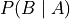

Conditional Probability#
Definition#
Recall the definition Conditional Probability is given by,
Use this definition to solve the following problems.
In a highschool, there are 287 students. 92 of the students play football. 50 of them play football and basketball. What is the probability a randomly selected football player also plays basketball?
In a sample of 100 adultS, 45 of them owned a dog, 30 of them owned a cat and 18 of them owned a dog and a cat. What percentage of those who have a dog also have a cat?
Suppose 15% of the population of a country have auburn hair and are left-handed, while a total of 25% of the population have auburn hair. What percent of those with auburn hair are left-handed?
You are given the following Venn Diagram,

Use this Venn Diagram to answer the following questions.
Find
Find 

You shuffle a deck of playing cards and deal yourself two cards at random.
If the first card is a king, what is the probability the second card is a king?
What is the probability both cards are kings?
What is the difference between the meanings of part a and part b?
What is the probability of not getting a pair of kings?
A box contains three coins: two regular coins and a double-sided coin with heads on both sides. You select a coin at random and flip it.
What is the probability it lands heads up?
If it lands heads up, what is the probability you have selected the double-sided coin?
Paging through a magazine, you notice a interesting survey of randomly selected individuals who were each asked two questions. The first question was “Do you believe the Earth is flat or round?”. The second question was, “Do you think Finland is a real country ?” The results are given in the table below,
Flat |
Round |
|
Exists |
15 |
120 |
Doesn’t |
12 |
35 |
Use this table to answer the following problems.
Draw a Venn Diagram that represents the results.
How many people were included in this survey?
What is the probability a randomly selected in this survey person believes the Earth is flat?
What is the probability a randomly selected in this survey person believes Finland doesn’t exist?
Of the people who believe the Earth is round, what percentage of them believe Finland exists?
If a randomly selected person believes Finland doesn’t exist, what is the probability he or she believes the Earth is flat?
If a randomly selected person believes the Earth is flat, what is the probability he or she doesn’t believe Finland exists?
Spoiler Alert Why is the answer to part f different from the answer to part g?
Sample Space Reduction#
A bag contains 3 red marbles and 4 blue marbles. Two marbles are drawn at random without replacement. If the first marble drawn is red, what is the probability the second marble is blue?
Suppose two fair dice have been tossed.
What is the probability of the faces sum to 5 if they land on different numbers?
If the total of their top faces is found to be divisible by 5, what is the probability that both of them have landed on five?
Warning
Challenge Problem Ahead
In a small lake, it is estimated that there are approximately 105 fish, of which 40 are trout and 64 are carp. A fisherman caught eight fish. What is the probability that exactly two of them are trout if we know that at least three of them are not?
Hint
Reduce the sample space and then use Combinatorics.
Bayes’ Laws#
100 sci-fi fans were polled by the reporters at Imporant News Weekly. 64 of those polled preferred Star Wars to Star Trek, while the rest of them, due to poor life choices, preferred Star Trek to Star Wars. Of the people who preferred Star Wars, 75% of them thought The Empire Strikes Back was the best of the film in the ennealogy. Of the people who preferred Star Trek, only half of them thought The Empire Strike Back was the best film in the series.
What percent of people preferred Star Wars over Star Trek and thought The Empire Strikes Back was the best film in the series?
What percent of people preferred Star Trek over Star Wars and thought The Empire Strikes Back wasn’t the best film in the series?
One of the cards of an ordinary deck of 52 cards is lost. What is the probability that a random card drawn from this deck is a spade?
Of patients in a hospital, 20% of those with myocardial infarcation have had strokes and 35% of those without myocardial infarcation have had strokes. If 40% of the patients have had myocardial infarcation, what percent of the patients have had strokes?
A factory produces its entire output with three machines. Each machine has an error rate that causes it to produce defective units. Machine I produces 50% of the output and has a 4% error rate. Machine II produces 30% of the output and has a 2% error rate. Machine III produces 20% of the output and has a 4% error rate. What percentage of the total output is defective?
Suppose 1% of the United States Population has a serious life-threatening condition that slowly turns their internal organs into goop and drives them insane before an extremely painful death, known as Sejal’s Disease. A test is developed to help diagnose this awful curse on humanity. The test can determine whether an individual does or does not have Sejal’s Disease. If the person has the disease, it will give a positive result 98% of the time. If the person does not have the disease, it will give a false positive 5% of the time. If you take the test and get a positive result, what is the probability you are afflicted with Sejal’s Disease?
Independence#
You are dealt a single card from a standard deck of 52 cards, face down.
Without any prior knowlesdge, what is the probability of the card being a Jack?
The dealer reveals to you the suit of the card is a spade. How does this information change your answer to part a?
Based on your answers to the parts a and b, is the event of getting a Jack independent of the event of getting a spade?
Suppose instead of revealing the card is a spade, the dealer reveals its rank is greater than 10. How does this information change your answer to part b
Is the event of getting a card with a rank greater than 10 independent of the event of getting a Jack?
Use conditional probability and independence to solve the following problems.
You flip two fair coins. What is the probability of getting two heads?
You draw a single card from a standard deck of 52 cards. What is the probability of getting a king of hearts?
What is the probability of getting exactly three sixs in three die rolls?
A fair die is rolled twice. Let A denote the event that the sum of the outcomes is odd. Let B denote the event that it lands 2 on the first toss. Are A and B independent? Why or why not?
Suppose that two numbers are selected at random and independently from the interval
 . What is the probability that the first one is less than , and the second one is greater than ?
. What is the probability that the first one is less than , and the second one is greater than ?In a certain game, you perform three tasks. You flip a quarter, and win if you get heads. You roll a single die, and win if you get a six. You pick a card from a full playing-card deck, and win if you pick a card in the suit of spades. If any of these task are successful, then you win the game. What is the probability of winning?
Hint
You win in the case you get a head or you get a six or you get a spade. Don’t forget to account for the overlapping events!
In data communications, a message transmitted from one end is subject to various sources of distortion and may be received erroneously at the other end. A bit is the smallest unit of information transmitted, and is either 0 or 1. Suppose that a message of 64 bits is transmitted. If each bit is received incorrectly with a probability 0.0001 independently of the other bits, what is the probability the message is free of error?
A.P. Exam Practice#
2018 Free Response, #3
Approximately 3.5 percent of all children born in a certain region are from multiple births (that is, twins, triplets, etc.). Of the children born in the region who are from multiple births, 22 percent are left-handed. Of the children born in the region who are from single births, 11 percent are left-handed.
What is the probability that a randomly selected child born in the region is left-handed?
What is the probability that a randomly selected child born in the region is a child from a multiple birth, given that the child selected is left-handed?
A random sample of 20 children born in the region will be selected. What is the probability that the sample will have at least 3 children who are left-handed?
2016, Free Response, #3
A medical researcher surveyed a large group of men and women about whether they take medicine as prescribed. The responses were categorized as never, sometimes, or always. The relative frequency of each category is shown in the table.

One person from those surveyed will be selected at random.
What is the probability that the person selected will be someone whose response is never and who is a woman?
What is the probability that the person selected will be someone whose response is never or who is a woman?
What is the probability that the person selected will be someone whose response is never given that the person is a woman?
For the people surveyed, are the events of being a person whose response is never and being a woman independent? Justify your answer.
Assume that, in a large population, the probability that a person will always take medicine as prescribed is 0.54. If 5 people are selected at random from the population, what is the probability that at least 4 of the people selected will always take medicine as prescribed? Support your answer.
2009, Free Response Form B, #2
The ELISA tests whether a patient has contracted HIV. The ELISA is said to be positive if it indicates that HIV is present in a blood sample, and the ELISA is said to be negative if it does not indicate that HIV is present in a blood sample. Instead of directly measuring the presence of HIV, the ELISA measures levels of antibodies in the blood that should be elevated if HIV is present. Because of variability in antibody levels among human patients, the ELISA does not always indicate the correct result.
As part of a training program, staff at a testing lab applied the ELISA to 500 blood samples known to contain HIV. The ELISA was positive for 489 of those blood samples and negative for the other 11 samples. As part of the same training program, the staff also applied the ELISA to 500 other blood samples known to not contain HIV. The ELISA was positive for 37 of those blood samples and negative for the other 463 samples.
When a new blood sample arrives at the lab, it will be tested to determine whether HIV is present. Using the data from the training program, estimate the probability that the ELISA would be positive when it is applied to a blood sample that does not contain HIV.
Among the blood samples examined in the training program that provided positive ELISA results for HIV, what proportion actually contained HIV?
When a blood sample yields a positive ELISA result, two more ELISAs are performed on the same blood sample. If at least one of the two additional ELISAs is positive, the blood sample is subjected to a more expensive and more accurate test to make a definitive determination of whether HIV is present in the sample. Repeated ELISAs on the same sample are generally assumed to be independent. Under the assumption of independence, what is the probability that a new blood sample that comes into the lab will be subjected to the more expensive test if that sample does not contain HIV?
2003, Free Response Form B, #2
A simple random sample of adults living in a suburb of a large city was selected. The age and annual income of each adult in the sample were recorded. The resulting data are summarized in the table below, where the rows represent the number in that age group and the columns represent the number in that income bracket,
$25,000 - $35,000 |
$35,001 - $50,000 |
Over $50,000 |
Total |
|
21 - 30 |
8 |
15 |
27 |
50 |
31 - 45 |
22 |
32 |
35 |
89 |
46 - 60 |
12 |
14 |
27 |
53 |
Over 60 |
5 |
3 |
7 |
15 |
Total |
47 |
64 |
96 |
207 |
What is the probability that a person chosen at random from those in this sample will be in the 31-45 age category?
What is the probability that a person chosen at random from those in this sample whose incomes are over $50,000 will be in the 31-45 age category? Show your work.
Based on your answers to parts (a) and (b), is annual income independent of age category for those in this sample? Explain.
2018, Free Response, #3
Approximately 3.5 percent of all children born in a certain region are from multiple births (that is, twins, triplets, etc.). Of the children born in the region who are from multiple births, 22 percent are left-handed. Of the children born in the region who are from single births, 11 percent are left-handed.
What is the probability that a randomly selected child born in the region is left-handed?
What is the probability that a randomly selected child born in the region is a child from a multiple birth, given that the child selected is left-handed?